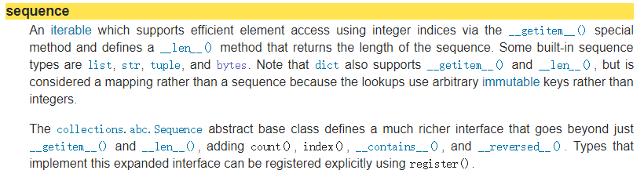
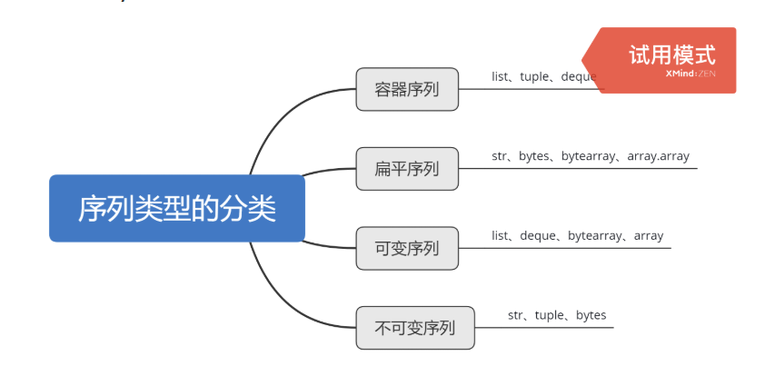

官方文档:

翻译：
一个可迭代对象，它支持通过__getitem__()特殊方法使用整数索引高效地访问元素，并定义了一个__len__()方法，该方法返回序列的长度。一些内置的序列类型是list、str、tuple和bytes。注意，dict也支持__getitem__()和__len__()，但它被认为是一个映射，而不是一个序列，因为查找使用任意不可变键，而不是整数。
collections.abc.Sequence抽象基类定义了一个比__getitem__()和__len__()更丰富的接口，增加了count()，index()，__contains__()，和__reversed__()。可以使用register()显式注册实现此扩展接口的类型。

注:
• 序列中的每个元素被分配一个序号，即元素的位置，称为索引。以正数第一个元素的索引为0，正数第二个元素的索引为1，倒数第一个元素的索引为-1，以此类推。
• 分片使用2个冒号分隔的3个数字来完成：[srart:end:step]
• 第一个数字表示切片开始位置（默认为0），第二个数字表示切片截止（但不包含）位置（默认为列表长度），第三个数字表示切片的步长（默认为1）
• 可以使用切片来截取列表中的任何部分，得到一个新列表，也可以通过切片来修改和删除列表中部分元素，甚至可以通过切片操作为列表对象增加元素。
• 与使用下标访问列表元素的方法不同，切片操作不会因为下标越界而抛出异常，而是简单地在列表尾部截断或者返回一个空列表，代码具有更强的健壮性。
• step为正时，Python会从序列头部开始向右提取元素，直到最后一个元素， start索引的元素应在end索引的元素左边，否则将返回一个空序列；step为负时， Python会从序列尾部开始向左提取元素，直到第一个元素，这时start索引的元素应在end索引的元素右边，否则将返回一个空序列。step不能为0。
• 当step省略时可以省略最后一个冒号或置空最后一个索引
[start:end]或[start:end:]
• 当start或end省略时要置空对应索引
[start:]或[:end]或[:]
•切片可以返回列表的浅拷贝a[:]==a
• a[:]将得到包含a所有元素的分片，是一种很有效率的复制整个列表的方法
• 序列连接操作，只有相同类型的序列才能进行连接操作
• 实质上是创建了一个新序列并将原序列中的元素和新元素依次复制到新序列的内存空间
• 序列重复操作，用数字x乘以一个序列会产生新的序列，新的序列是原序列的重复
• 使用in运算符（布尔运算符）检查一个元素是否在序列中，返回布尔值True或False
>>> 2 in [2,3,4]
True
>>> [2] in [2,3,4]
False
>>>‘P’in ‘PYTHON’
True• len()：返回序列中的元素个数
• max()、 min()：返回序列中的最大或最小元素
①直接赋值：其实就是对象的引用（别名）。
b = a: 赋值引用，a 和 b 都指向同一个对象。
②浅拷贝(copy)：拷贝父对象，不会拷贝对象的内部的子对象。
b =a.copy(): 浅拷贝, a 和 b 是一个独立的对象，但他们的子对象还是指向统一对象（是引用）。
如果原地修改子对象，父对象也会改变。
③深拷贝(deepcopy)： copy 模块的 deepcopy 方法，完全拷贝了父对象及其子对象。
b = copy.deepcopy(a): 深度拷贝, a 和 b 完全拷贝了父对象及其子对象，两者是完全独立的。